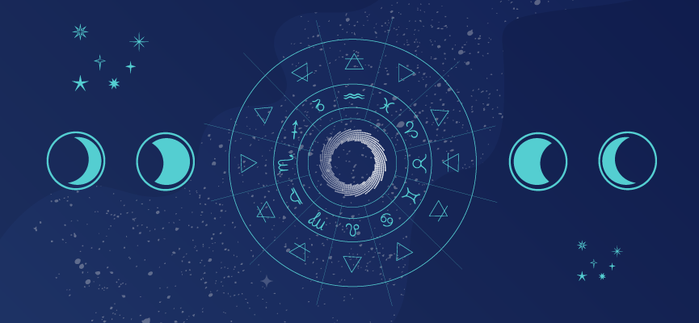

La astrología estudia la posición y los movimientos de los astros, y por eso ambas palabras comparten raíz, pero lo hace bajo la creencia de que la configuración del cielo influye en los eventos terrestres o en los seres humanos y en sus vidas.
Historia de la astrología
El nacimiento de la astrología sucedió al surgimiento de los cálculos matemáticos, de la medición y el trazo de los movimientos relativos a los cuerpos celestes, estrellas y planetas. La astronomía teórica y matemática se desarrolló tardíamente en la historia mesopotámica a partir del siglo V.

Caracteristicas de la astrología
Astrología es una rama donde se agrupa las experiencias, conocimientos de sucesos ocurrido en el pasado, con la necesidad de buscar solución en relacion al orden, evitando la confunsion ante la vida.
medio de sus experiencias se realizan observaciones de los planetas, la luna y el sol, relacionados con sus movimientos, posiciones en el espacio, el día de ocurrencia, características comunes con otras personas y así la fecha de nacimiento para canalizar la carta astral o natal, siendo caracterizada como la Astrología occidental.
Astrología se basa a la Astronomía del cual se desprende de aquí los integrantes del cosmo y por ende el horóscopo.
La Astrología determina el signo zodiacal basándose en la posición del sol justamente en la constelación por la que transita.
Astrología se basa gran parte de los hechos, suposiciones, creencias, culturas, tradiciones del ser humano en fechas concretas con lo que ocurre en el, tradiciones del ser humano en fechas concretas con lo que ocurre en la astrologia Azteca.
Astrología para sus predicciones o proyecciones, son determinadas por mitos, hechos pasados, sin considerar normas o leyes que puedan ser comprobadas.